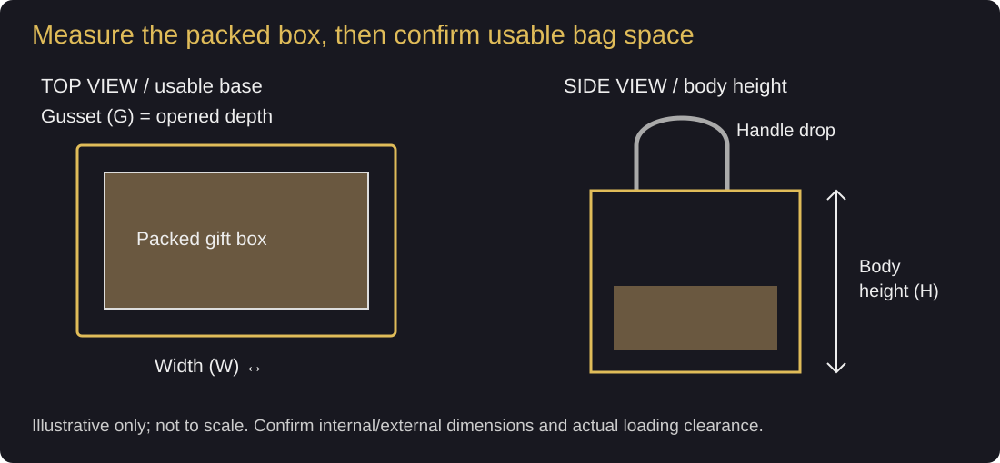
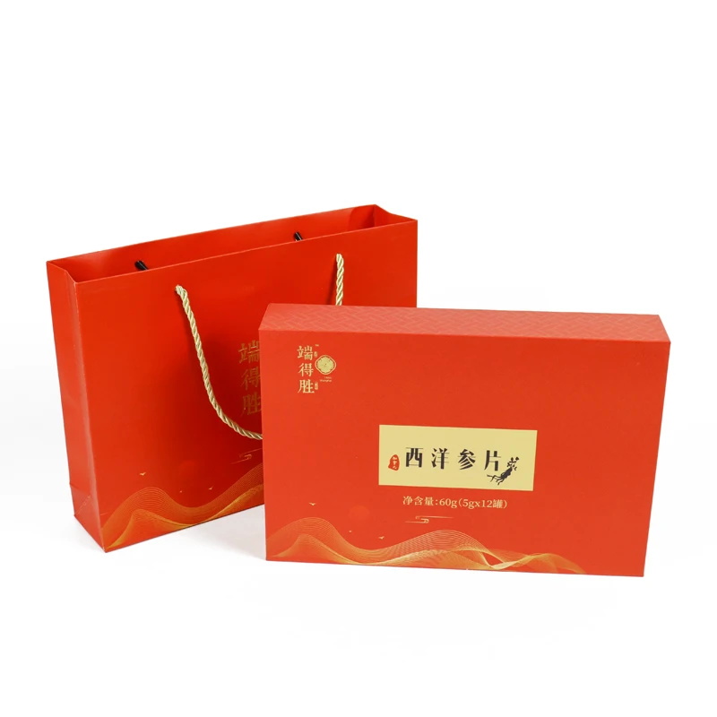

Quick answer: Choose a gift bag from the outside dimensions of the finished, packed gift box—not the product inside it. Confirm the bag’s usable width, gusset and body height, allow room to load and remove the box, and check the handles with the actual packed weight. A size label such as small, medium or large is not enough to approve fit.
In this guide
- What should you measure before choosing a gift bag?
- How are paper gift bag dimensions written?
- How much larger should the gift bag be than the box?
- What should you check about handles and carrying weight?
- Should every gift-box size have its own bag?
- How do you coordinate the bag with the gift box?
- What should the box-and-bag sample review include?
- What should you send for a matching gift-box and bag quote?
- Frequently asked questions
What should you measure before choosing a gift bag?
Close the gift box in its final presentation state, including any ribbon, sleeve or decorative feature that stays on it. Decide how it will sit in the bag, then record the maximum outside width, depth and height in that orientation. Also record the total packed weight. A dimensioned photograph helps explain which face should point toward the customer.
Measure the assembled box even when it is supplied flat. An insert can change the product arrangement, while an external bow can change the space needed for loading. Use our box-dimension guide if you need to distinguish internal product-fit dimensions from finished outside dimensions.
For two boxes sold as one gift, measure their combined arrangement. If the bag carries one of two alternative box sizes, test both separately. These are different requirements and should not be left for the supplier to infer.
How are paper gift bag dimensions written?
Write each dimension by name and include the unit. This guide uses width × gusset × body height: width across the front, gusset as the opened side depth, and height from the base to the top edge, excluding the handles. Specify handle drop separately. Ask the supplier to confirm the notation, whether sizes describe internal or external measurements, and the usable space after construction.
The Precious Packaging buyer guide illustrates width, gusset and height for bespoke bags. Treat that as a reference for communicating dimensions, not a universal size chart. A quoted ‘medium’ bag or three unlabeled numbers cannot establish whether your box will fit.
The widest front panel does not compensate for a gusset that is too narrow. Check both base directions and the opening through which the box must pass. Confirm whether a top turn-in, handle attachment or internal reinforcement reduces the loading space.

How much larger should the gift bag be than the box?
Allow enough usable space for the finished box to enter and leave without forcing the corners against the bag. The right allowance depends on the box shape, paper, construction, handles and presentation. There is no single extra measurement that guarantees fit for every bag.
For illustration, suppose a packed box sits on a 240 × 160 mm footprint and is 90 mm high. A trial with a confirmed usable bag space of 260 × 180 × 140 mm leaves 20 mm total clearance in each base direction and 50 mm above the box. If centered, the base clearance is 10 mm per side. These numbers are an arithmetic example, not a recommended production specification or standard tolerance.
Use the trial to check loading, finger access, tissue and the intended view at the top. A ribbon bow may need more space; a tall lid may catch on a handle fixing. If the bag looks excessively empty, review its proportions or the box orientation rather than automatically adding filler.
What should you check about handles and carrying weight?
Separate body height from handle drop. A bag can surround the box yet still be uncomfortable to carry if the handles are too short or if the box obstructs the hand space. Ask how the handle style, attachment, top reinforcement and base are proposed for the complete packed load.
Compare rope or ribbon handles on a representative sample, not from a photograph alone. Load the actual product set, lift it in the intended way and check whether the box stays level, the handle fixings interfere with removal, or the base and side panels distort. If a specified load capacity is required, agree a documented test method and acceptance criteria with the supplier. A single hand-lift is not a certified rating.
Do not choose solely from paper grammage or a statement that the bag feels thick. The whole construction must be reviewed. A paper gift bag is also not an outer shipping carton; use an appropriate shipping pack when sending the complete set by parcel.
Should every gift-box size have its own bag?
Start with the actual combinations customers receive. A shared bag may suit two closely sized boxes if both look intentional, remain manageable and pass the same loading checks. A much smaller box may slide around or sit awkwardly at the bottom of a bag chosen for the largest set.
Retailers raise this trade-off in public discussions. In one Reddit sourcing question, a shop wanted logo-printed paper bags in multiple sizes while working within a budget. In another discussion, a retailer described using different bag sizes and branding approaches. These are individual experiences, not market pricing or evidence that a particular setup is best.
Compare a small set of justified sizes against one shared size. Record which box each bag serves and estimate order quantities from your own sales mix. Ask for the quoted minimum and price for each size rather than assuming that a combined total satisfies every specification.
How do you coordinate the bag with the gift box?
Once fit is established, compare paper color, logo position, finish and handle appearance as a complete set. The same color artwork can look different on different surfaces, so approve physical references together. Keep the logo clear of handle fittings and folds, and review both the empty bag and the bag carrying the box.
The catalogue photographs below show an existing red box-and-bag presentation and a matching handled bag. They are references for coordinating proportions and artwork; they do not establish the usable dimensions, carrying rating or results of a customer campaign.
Explore our custom paper gift bags and rigid gift-box formats. Include both components in one specification so fit and presentation can be reviewed together.


What should the box-and-bag sample review include?
Ask someone unfamiliar with the set to pack and unpack it. Check whether the bag opens easily, whether the box enters without forced bending, and whether removal requires pulling on decorative parts. Review the set with its intended tissue, card and ribbon. Repeat for every box combination the bag is meant to carry.
Record the accepted dimensions, packed weight, materials, handles and artwork revision. Agree which handling checks are required before production and which sample represents the approved result. Our physical sample approval guide explains why a rendering alone is insufficient for these decisions.
What should you send for a matching gift-box and bag quote?
Send the closed box’s outside dimensions, intended orientation and packed weight; list any bow, sleeve or accessory that remains attached. State whether the bag carries one box, multiple boxes together or alternative sizes. Add quantity per size, artwork, color references, destination and target arrival date.
Ask the supplier to identify the proposed usable bag dimensions, handle style, reinforcement, sample scope and delivery specification. Confirm whether boxes and bags arrive separately or assembled as sets. For a like-for-like comparison, use our gift-box quote checklist.
Request a matching box-and-bag quote and include the fit requirements you already know. If you are undecided, ask to compare a shared bag size with separate sizes for the same box range.
Frequently asked questions
Are small, medium and large gift bag sizes standardized?
Do not rely on those labels for fit. Request actual dimensions, named in a confirmed order with units, and check the usable space on a sample.
Should I use the box’s inside or outside dimensions?
Use the outside dimensions of the finished, closed gift box to size the bag. Inside dimensions help fit the product into the box, which is a different task.
Does gift bag height include the handles?
In this guide, body height excludes handles. Specify handle drop separately and ask the supplier to confirm how its quotation and drawing define both measurements.
Can one bag fit two different gift-box sizes?
Possibly. Test each box for loading, removal, movement and appearance. Confirm whether the requirement is one box at a time or both boxes carried together.
Does thicker paper guarantee that the bag can carry my gift set?
No. Review the complete construction, handles, attachments, base and packed weight. Agree an appropriate sample assessment or documented load test where required.
Can I approve fit using only a digital mockup?
A mockup can help with proportions and artwork. Use a physical sample with the actual packed box to confirm usable space, loading and carrying behavior.
Plan your box and bag as one set
Share the packed box dimensions, weight, quantities per size and destination. We can discuss the bag fit and sample requirements with your gift-box specification.
Request a Matching Box & Bag Quote →